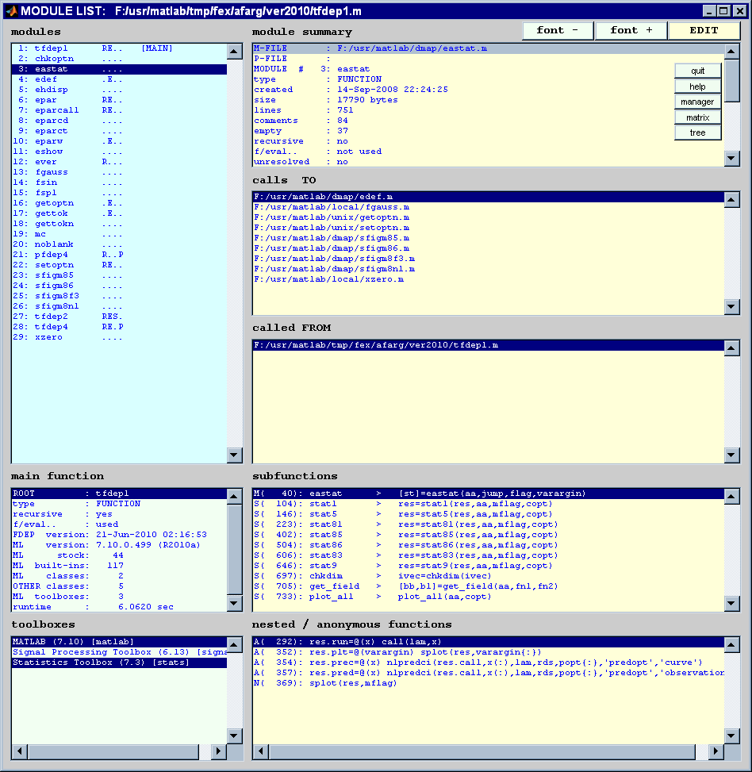
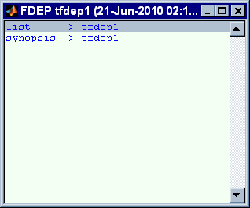
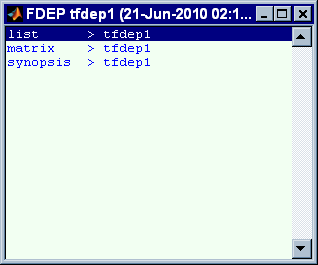
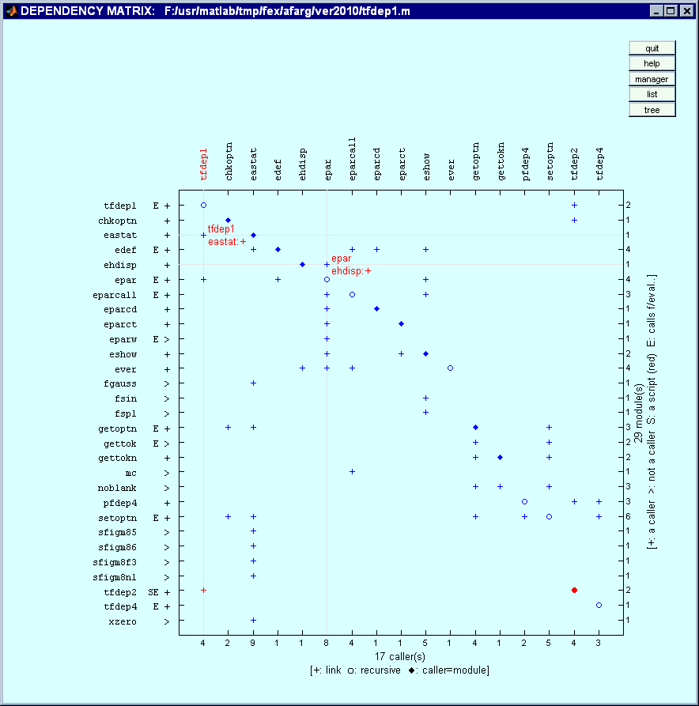
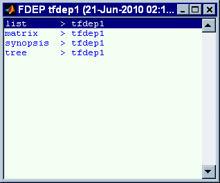
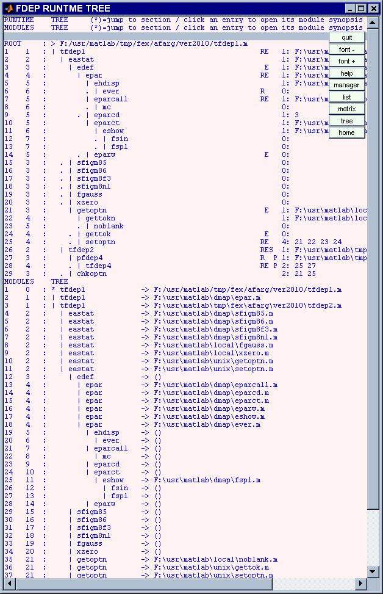
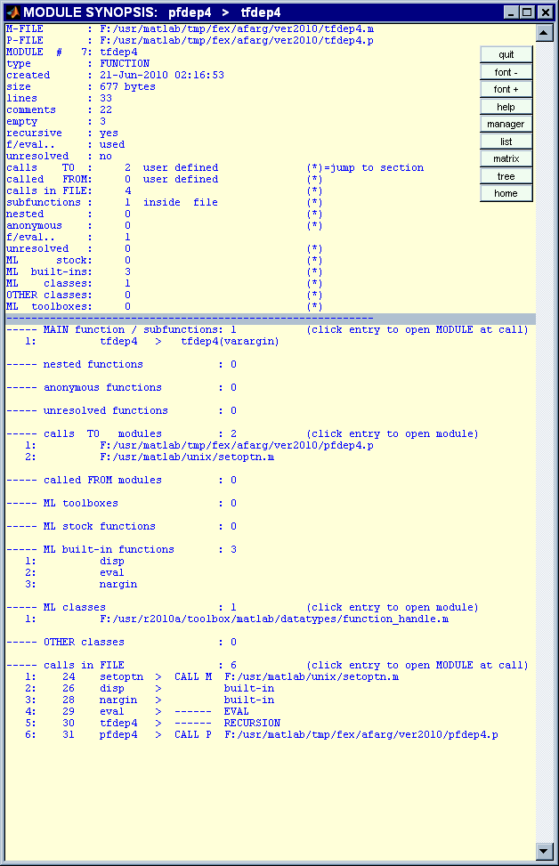
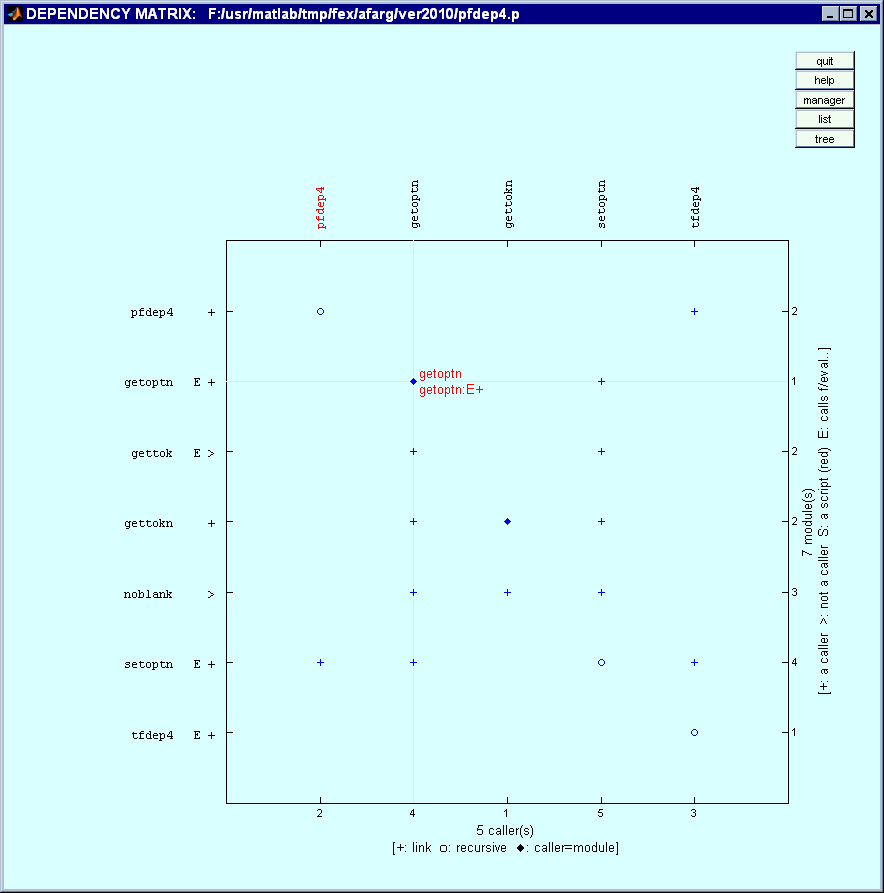
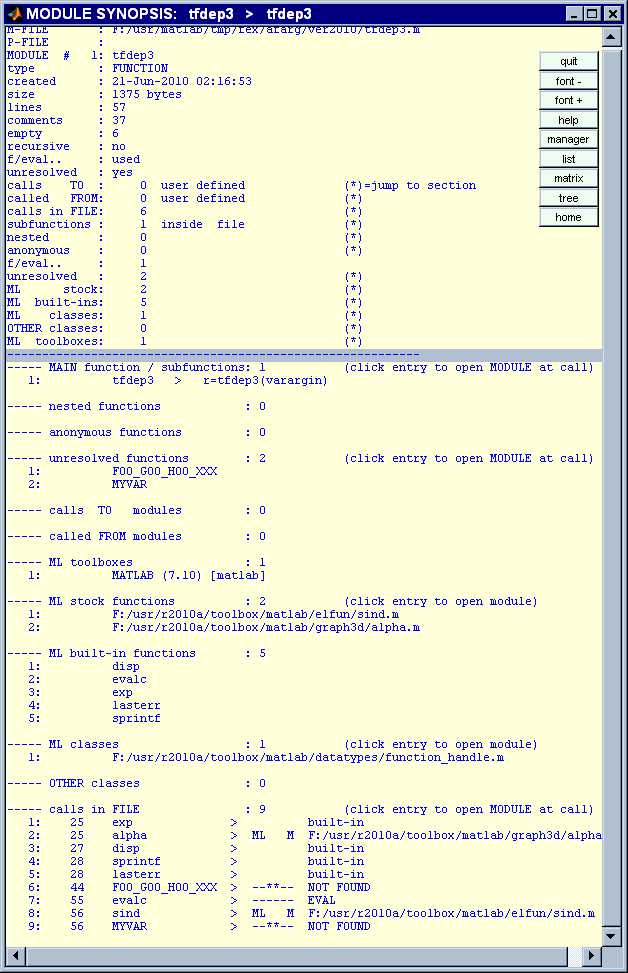
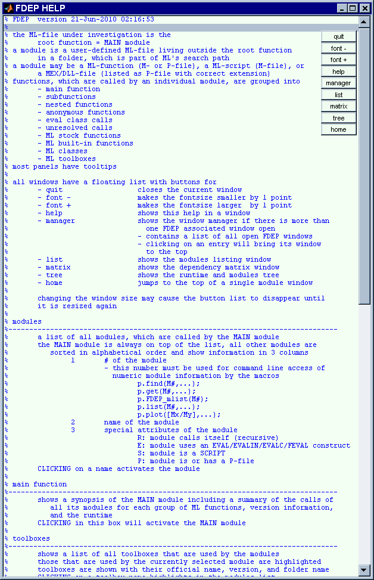

Contents
- introduction
- TFDEP1: dissection of an M-file
- - prepare the environment
- - the runtime output
- - the listing's panels
- - the content of selected modules
- - the dependency matrix
- - the runtime and caller tree
- - the windows manager
- PFDEP4: disscetion of a P-file
- - the runtime output
- - the content of selected modules
- software developers
- - find modules and show their summary
- - find modules and retrieve their content
- - find modules in the dependency matrix
- - debug a function
- - checking the independence of a program for distribution
- - show toolboxes and all modules depending on them
- help
- - for the listing's panels
- - for FDEP
introduction
% FDEP dissects a MATLAB (ML) file and iteratively looks % for all user defined functions (modules), which are % used during runtime % % FDEP retrieves for each module the exacty syntax of its % - main function % - subfunctions % - nested functions % - anonymous functions % - eval class calls % - unresolved calls % and all % - ML stock functions % - ML built-in functions % - ML classes % - ML toolboxes % that it uses % % only ML entities can be extracted from P-files % % runtime options and returned macros create user-friendly, % comprehensible, and interactive GUIs, which % - list the results in various panels % - plot a full dependency matrix % % in essence, FDEP is a wrapper for DEPFUN and MLINT; however, due to % an efficient pruning engine it is considerably faster % % simple benchmark % no background jobs % no internet connection % computer restarted for each test % % system 1 = ic2 / 2*2.4ghz / 2gb / winvista / r2008b % system 2 = p4 / 1.4ghz / 512m / win2k.sp4 / r2008b % % result [s] of 5 runs in a loop % system 1 system 2 % fdep('tfdep1'); = 17.33 69.10 % depfun('tfdep1'); = 466.67 2612.32 % % % please use a small font size in your browser for best formatting results % of this HTML document % % us 21-Jun-2010 02:16:53
TFDEP1: dissection of an M-file
% NOTE % - some TFDEP test files contain proprietary functions, which you will NOT have % therefore, this demo file - FDEPHTML.M - is NOT part of the package % - the test files are included for instructional purposes % - TFDEP3 will run in your environment
- prepare the environment
% create P-files needed for TFDEP2 and TFDEP4 % - the M-file associated TFDEP4.P % - the standalone PFDEP4.P delete *fdep4.p; pcode tfdep4; copyfile tfdep4.p pfdep4.p; % macro to close all figures clfig=@(varargin) delete(findall(0,'type','figure')); % clear functions and variables, which will be assigned during this demo clear fdep d m p pp s;
- the runtime output
% SYNTAX % runtime : p=fdep(FILE,OPT1,...,OPTn); % off-line : % p.rtree % - sparse runtime output as seen during in the command window % unless option [-q] is set % p.tree % - verbose runtime output p=fdep('tfdep1','-q'); % column# description % --------------------------------------------------------------------------- % 1 # of the module when first detected during runtime % 2 callers depth of the module % 3 name of the module preceeded by a depth guide % 4 special attributes of the module % R: module calls itself (recursive) % E: module uses an EVAL/EVALIN/EVALC/FEVAL construct % S: module is a SCRIPT % P: moudle is or has a P-file % 5 # of calls to other modules in this function % 6 name of the module that is called -or- % references to previously detected modules during runtime % % example % module# 29 = <chkoptn> calls 2 previously found modules % 21 = <getoptn> % 25 = <setoptn> disp(p.rtree);
ROOT : > F:/usr/matlab/tmp/fex/afarg/ver2010/tfdep1.m 1 1 : | tfdep1 RE 1: F:\usr\matlab\dmap\eastat.m 2 2 : | eastat 1: F:\usr\matlab\dmap\edef.m 3 3 : | edef E 1: F:\usr\matlab\dmap\epar.m 4 4 : | epar RE 1: F:\usr\matlab\dmap\ehdisp.m 5 5 : | ehdisp 1: F:\usr\matlab\dmap\ever.m 6 6 : . | ever R 0: 7 5 : | eparcall RE 1: F:\usr\matlab\tmp\fex\afarg\ver2010\mc.m 8 6 : . | mc 0: 9 5 : . | eparcd 1: 3 10 5 : | eparct 1: F:\usr\matlab\dmap\eshow.m 11 6 : | eshow 1: F:\usr\matlab\dmap\fsin.m 12 7 : . | fsin 0: 13 7 : . | fspl 0: 14 5 : . | eparw E 0: 15 3 : . | sfigm85 0: 16 3 : . | sfigm86 0: 17 3 : . | sfigm8f3 0: 18 3 : . | sfigm8n1 0: 19 3 : . | fgauss 0: 20 3 : . | xzero 0: 21 3 : | getoptn E 1: F:\usr\matlab\local\gettokn.m 22 4 : | gettokn 1: F:\usr\matlab\local\noblank.m 23 5 : . | noblank 0: 24 4 : . | gettok E 0: 25 4 : . | setoptn RE 4: 21 22 23 24 26 2 : | tfdep2 RES 1: F:\usr\matlab\tmp\fex\afarg\ver2010\pfdep4.p 27 3 : | pfdep4 R P 1: F:\usr\matlab\tmp\fex\afarg\ver2010\tfdep4.p 28 4 : . | tfdep4 RE P 2: 25 27 29 3 : . | chkoptn 2: 21 25
- the listing's panels
% SYNTAX % runtime : p=fdep(FILE,'-l',...); % marcros : % p.list(); % - select the main function at startup % p.list(M) % - select module M at startup % - M: module name -or- module# % pp=p.list(...) % - returns p in pp including a new macro pp.smod for % command line selection of modules % pp.smod(M) % - select module M % NOTE % - select module #3/<eastat> p.list(3); % -or- p.list('eastat'); % -or- % pp=p.list(); % pp.smod(3); % -or- pp.smod('eastat');
- the content of selected modules
% SYNTAX % macros : p.mhelp(M1,M2,...,Mn) % - show the full synopsis of modules M1,... in separate windows % - only valid input is shown % - Mx: module names -or- module#s % - valid syntax may include any combination of these % input arguments % - numbers % - numeric arrays % - character strings % - cells of combinations of the above % % - note this syntax applies for these macros as well % p.find() % p.get() % % EXAMPLES % p.mhelp(1:2,'mod5','mod6',{3:4,'mod10',5},10:20,100); % % show the full synopsis of all modules % p.mhelp(p.module); % NOTE % - function groups are sorted % - all calls found in the file are shown in sequence and may be repeated % - the window manager opens if there is more than one FDEP associated window % open % show the full synopsis of module #1 in a window p.mhelp(1); % -or- % p.mhelp('tfdep1');

- the dependency matrix
% SYNTAX % runtime : p=fdep(FILE,'-m',...); % macros : % p.plot(); % - display the dependency matrix % p.plot(N1,N2,...,Nn); % - show the information at nodes N1,... at startup % - only valid nodes are shown % - Nx: [M#column,M#row] % NOTE % - CLICKING on a module name opens the file in the editor % - CLICKING on a node displays module information and guiding lines % - CLICKING on an empty space in the box clears all guiding lines p.mplot([1,3],[6,5]); % demo: select nodes 1/3 and 6/5 
- the runtime and caller tree
% SYNTAX % runtime : not available % gui : CLICKING the tree button % macros : % p.tplot(); % - display the runtime and module tree % NOTE % - CLICKING the runtime tree jumps to its start % - CLICKING the modules tree jumpt to its start % - CLICKING an entry opens the its full synopsis p.tplot(); 
- the windows manager
% if more than one FDEP window is opened a windows manager is created, which % lists all windows (see examples above) % CLICKING on an entry brings the window to the front clfig();
PFDEP4: disscetion of a P-file
- the runtime output
% due to formatting issues % - quiet mode % - off-line display pp=fdep('pfdep4.p','-q'); disp(char(pp.rtree));
ROOT : > F:/usr/matlab/tmp/fex/afarg/ver2010/pfdep4.p 1 1 : | pfdep4 R P 1: F:\usr\matlab\tmp\fex\afarg\ver2010\tfdep4.p 2 2 : | tfdep4 RE P 1: F:\usr\matlab\unix\setoptn.m 3 3 : | setoptn RE 1: F:\usr\matlab\local\gettokn.m 4 4 : | gettokn 1: F:\usr\matlab\local\noblank.m 5 5 : . | noblank 0: 6 4 : | getoptn E 1: F:\usr\matlab\unix\gettok.m 7 5 : . | gettok E 0:
- the content of selected modules
% module PFDEP4 % - standalone P-file % - calls cannot be extracted % the M-FILE entry is empty % the line entry shows NaN % the f/eval.. entry shows <not known> and <NaN> % the <calls in FILE> entry shows NaN % the <calls in FILE> section is omitted pp.mhelp('pfdep4');
% module TFDEP4 % - P-file with corresponding M-file pp.mhelp('tfdep4');
clfig();
software developers
- find modules and show their summary
% NOTE % - data from TFDEP1 are reused % SYNTAX % macro : p.find(M1,M2,...,Mn); % - show the summary of modules M1,... in the command window % - Mx: module name -or- module# % - see also: % p.mhelp(...) p.find('eastat',2);
M-FILE : F:/usr/matlab/dmap/eastat.m
P-FILE :
MODULE # 3: eastat
type : FUNCTION
created : 14-Sep-2008 22:24:25
size : 17790 bytes
lines : 751
comments : 84
empty : 37
recursive : no
f/eval.. : not used
unresolved : no
calls TO : 9 user defined
called FROM: 1 user defined
calls in FILE: 128
subfunctions : 11 inside file
nested : 1
anonymous : 4
f/eval.. : 0
unresolved : 0
ML stock: 19
ML built-ins: 30
ML classes: 1
OTHER classes: 0
ML toolboxes: 2
: +1 MATLAB (7.10) [matlab]
: +2 Statistics Toolbox (7.3) [stats]
-------------
M-FILE : F:/usr/matlab/unix/chkoptn.m
P-FILE :
MODULE # 2: chkoptn
type : FUNCTION
created : 03-Aug-2006 13:23:48
size : 1499 bytes
lines : 65
comments : 18
empty : 7
recursive : no
f/eval.. : not used
unresolved : no
calls TO : 2 user defined
called FROM: 1 user defined
calls in FILE: 6
subfunctions : 1 inside file
nested : 0
anonymous : 0
f/eval.. : 0
unresolved : 0
ML stock: 1
ML built-ins: 5
ML classes: 1
OTHER classes: 0
ML toolboxes: 1
: +1 MATLAB (7.10) [matlab]
- find modules and retrieve their content
% SYNTAX % macros : % m=p.get(M1,M2,...,Mn); % - retrieve the content from modules M1,... % - Mx: module name -or- module# % - see also: % p.mhelp(...) % NOTE % - if more than 1 module is selected, the output will be an array of structures % - function groups are sorted % - all calls found in the file are shown in sequence and may be repeated m=p.get('eastat',1);
% show content of module <eastat>
disp(m(1));
magic: 'FDEPmodule'
FDEPver: '21-Jun-2010 02:16:53'
MLver: '7.10.0.499 (R2010a)'
rundate: '21-Jun-2010 02:16:57'
MODULE_DESCRIPTION___________: [1x44 char]
module: 'eastat'
file: 'F:/usr/matlab/dmap/eastat.m'
parent: [1x44 char]
index: 3
type: 'FUNCTION'
isscript: 0
ispfile: 0
isrecursive: 0
haseval: 0
hasunresolved: 0
hascalls: 9
iscalled: 1
synopsis: {26x1 cell}
MODULE_FUNCTIONS___________: [1x44 char]
calls: {151x1 cell}
subfunction: {11x1 cell}
nested: {'splot(res,mflag)'}
anonymous: {4x1 cell}
unresolved: {0x1 cell}
callsTO: {9x1 cell}
callsFROM: {[1x44 char]}
ML_FUNCTIONS___________: [1x44 char]
MLfunction: {19x1 cell}
MLbuiltin: {30x1 cell}
MLclass: {[1x56 char]}
OTHERclass: {0x1 cell}
MLtoolbox: {2x1 cell}
% show ML functions, which module <eastat> uses
disp(m(1).MLfunction);
'F:/usr/r2010a/toolbox/matlab/datafun/corrcoef.m'
'F:/usr/r2010a/toolbox/matlab/datafun/hist.m'
'F:/usr/r2010a/toolbox/matlab/datafun/mean.m'
'F:/usr/r2010a/toolbox/matlab/datafun/median.m'
'F:/usr/r2010a/toolbox/matlab/datafun/std.m'
'F:/usr/r2010a/toolbox/matlab/funfun/fminsearch.m'
'F:/usr/r2010a/toolbox/matlab/funfun/optimset.m'
'F:/usr/r2010a/toolbox/matlab/helptools/help.m'
'F:/usr/r2010a/toolbox/matlab/polyfun/polyfit.m'
'F:/usr/r2010a/toolbox/matlab/polyfun/polyval.m'
'F:/usr/r2010a/toolbox/matlab/specgraph/stairs.m'
'F:/usr/r2010a/toolbox/stats/finv.m'
'F:/usr/r2010a/toolbox/stats/nlinfit.m'
'F:/usr/r2010a/toolbox/stats/nlparci.m'
'F:/usr/r2010a/toolbox/stats/nlpredci.m'
'F:/usr/r2010a/toolbox/stats/norminv.m'
'F:/usr/r2010a/toolbox/stats/polyconf.m'
'F:/usr/r2010a/toolbox/stats/prctile.m'
'F:/usr/r2010a/toolbox/stats/tinv.m'
% show ML toolboxes, which module <eastat> uses
disp(m(1).MLtoolbox);
'MATLAB (7.10) [matlab]'
'Statistics Toolbox (7.3) [stats]'
% show other classes, which module #2 uses mn=2; disp(sprintf('module #%5d: %s',mn,m(mn).module)); disp( 'classes :'); disp(m(mn).OTHERclass);
module # 2: tfdep1
classes :
'java.io.File'
'java.io.Serializable'
'java.lang.Comparable'
'java.lang.Object'
- find modules in the dependency matrix
% dependencies can be retrieved off-line % p.mat % dependency matrix % columns : callers % rows : modules % nodes : 1 > caller ~= modules % 2 > caller == module (recursion) % p.caller % list of modules that call other modules % NOTE % - data from PFDEP4 are reused % - all modules are called from % - not all modules are callers % show modules, which are called by caller #2 caller=2; cfrom=pp.module(pp.mat(:,caller)~=0); disp(sprintf('caller : %s\ncalling:',pp.caller{caller})); disp(sprintf(' > %s\n',cfrom{:}));
caller : getoptn
calling:
> gettok
> gettokn
> noblank
> setoptn
% compare result with the dependency matrix marking caller#2/caller#2
pp.mplot([2,2]);
 clfig();
- debug a function
% show the content of TFDEP3 % - note the explanations for subsections 1-3 % - note that MLINT finds no syntax errors dbtype('tfdep3','17:57'); disp(sprintf('\nMLINT\n')); mlint -all -cyc tfdep3;
17 function r=tfdep3(varargin)
18
19 % 1) alpha
20 % - is a ML stock function
21 % MLROOT\toolbox\matlab\graph3d\alpha.m
22 % - is NOT initialized in TFDEP3
23 % > will cause an error if used in this context
24 try
25 r(1)=exp(alpha);
26 catch %#ok pre-2008a
27 disp('TFDEP3> error using <alpha>');
28 disp(sprintf('%s\n',lasterr)); %#ok pre-2008a
29 end
30
31 % 2) beta
32 % - is a ML stock function
33 % MLROOT\toolbox\matlab\specfun\beta.m
34 % - is initialized in TFDEP3
35 % > will NOT cause an error
36 beta=1;
37 r(2)=exp(beta);
38
39 % 3) FOO_GOO_HOO_XXX
40 % - is NOT a function (at least in this ML setup!)
41 % - is NOT initialized
42 % > will cause an error
43 try
44 r(3)=exp(FOO_GOO_HOO_XXX);
45 catch %#ok pre-2008a
46 disp('TFDEP3> error using <FOO_GOO_HOO_XXX>');
47 disp(sprintf('%s',lasterr)); %#ok pre-2008a
48 end
49
50 % 4) eval assigns a variable MYVAR during runtime
51 % - is NOT a function (at least in this ML setup!)
52 % - is initialized in an EVAL statement
53 % > will NOT cause an error
54 com='MYVAR=0';
55 s=evalc(com); %#ok DANGEROUS
56 r(3)=sind(MYVAR);
57 end
MLINT
L 17 (C 12-17): The McCabe complexity of 'tfdep3' is 3.
% look at the expected runtime errors
tfdep3;
TFDEP3> error using <alpha> Error using ==> alpha Too many output arguments. TFDEP3> error using <FOO_GOO_HOO_XXX> Undefined function or variable 'FOO_GOO_HOO_XXX'.
% dissect the file % - note that there are NO dependencies s=fdep('tfdep3','-q'); disp(char(s.rtree));
ROOT : > F:/usr/matlab/tmp/fex/afarg/ver2010/tfdep3.m 1 1 : | tfdep3 E 0:
% look at the MAIN modules s.mhelp('tfdep3'); % peruse the <calls in FILE> section % - <alpha> erroneously will call the ML stock function, % because it was NOT initialized % - <beta> does NOT show up, % because it was initialized % - <FOO...> is considered a function because it was NOT initialized; % however, it was NOT found during runtime
clfig();
- checking the independence of a program for distribution
% a ML program, which must NOT depend on any user-defined function outside % its body, eg, a contribution to the FEX, should yield this runtime % output (unless the [-q] flag is used, see below) % NOTE % - NO <calls TO> % - NO <calls FROM> fdep fdep;
ROOT : > F:/usr/matlab/tmp/fex/afarg/ver2010/fdep.m
1 1 : | fdep 0:
------------- NO USER-DEFINED DEPENDENCIES FOUND
M-FILE : F:/usr/matlab/tmp/fex/afarg/ver2010/fdep.m
P-FILE :
MODULE # 1: fdep
type : FUNCTION
created : 21-Jun-2010 02:16:53
size : 94967 bytes
lines : 3867
comments : 610
empty : 223
recursive : no
f/eval.. : not used
unresolved : no
calls TO : 0 user defined
called FROM: 0 user defined
calls in FILE: 653
subfunctions : 53 inside file
nested : 0
anonymous : 48
f/eval.. : 0
unresolved : 0
ML stock: 33
ML built-ins: 87
ML classes: 1
OTHER classes: 0
ML toolboxes: 1
: +1 MATLAB (7.10) [matlab]
% programmers can use this form d=fdep('fdep','-q'); disp(d.ncall);
0
- show toolboxes and all modules depending on them
disp(char(p.modbox));
=============================================================
MATLAB (7.10) [matlab]
-------------------------------------------------------------
1/ 1: F:/usr/matlab/tmp/fex/afarg/ver2010/tfdep1.m
2/ 2: F:/usr/matlab/unix/chkoptn.m
3/ 3: F:/usr/matlab/dmap/eastat.m
4/ 6: F:/usr/matlab/dmap/epar.m
5/ 7: F:/usr/matlab/dmap/eparcall.m
6/ 8: F:/usr/matlab/dmap/eparcd.m
7/ 10: F:/usr/matlab/dmap/eparw.m
8/ 11: F:/usr/matlab/dmap/eshow.m
9/ 12: F:/usr/matlab/dmap/ever.m
10/ 15: F:/usr/matlab/dmap/fspl.m
11/ 16: F:/usr/matlab/unix/getoptn.m
12/ 17: F:/usr/matlab/unix/gettok.m
13/ 18: F:/usr/matlab/local/gettokn.m
14/ 19: F:/usr/matlab/tmp/fex/afarg/ver2010/mc.m
15/ 22: F:/usr/matlab/unix/setoptn.m
16/ 27: F:/usr/matlab/tmp/fex/afarg/ver2010/tfdep2.m
17/ 29: F:/usr/matlab/local/xzero.m
=============================================================
Signal Processing Toolbox (6.13) [signal]
-------------------------------------------------------------
1/ 13: F:/usr/matlab/local/fgauss.m
2/ 15: F:/usr/matlab/dmap/fspl.m
=============================================================
Statistics Toolbox (7.3) [stats]
-------------------------------------------------------------
1/ 3: F:/usr/matlab/dmap/eastat.m
help
- for the listing's panels
% NOTE % - shows the listing panels' descriptions of the current FDEP version % - to show the HELP in the command window, use macro % p.help(1); % - to show the HELP in a separate window, use macro p.help();
clfig();
- for FDEP
% NOTE % - formatting may be wrong in this HTML file help fdep;
FDEP to show a function's dependencies
FDEP dissects a MATLAB (ML) file and iteratively looks for
all user defined functions (modules), which are used
during runtime
FDEP retrieves for each module the exacty syntax of its
- main function
- subfunctions
- nested functions
- anonymous functions
- eval class calls
- unresolved calls
and all
- ML stock functions
- ML built-in functions
- ML classes
- ML toolboxes
that it uses
runtime options and returned macros create user-friendly,
comprehensible, and interactive GUIs, which
- list the results in various panels
- plot a full dependency matrix
in essence, FDEP is a wrapper for DEPFUN and MLINT;
however, due to an efficient pruning engine
it is considerably faster
see also: depfun, depdir, ckdepfun, mlint, which
and the accompanying HTML file
SYNTAX
-------------------------------------------------------------------------------
P = FDEP(FNAM);
P = FDEP(FNAM,OPT1,OPT2,...);
INPUT
-------------------------------------------------------------------------------
FNAM : M-file (function or script) or P-file
- only ML entities can be extracted from
standalone P-files, which do NOT have a
corresponding M-file
OPT : description
--------------------------------------------
-q : do NOT show runtime processing
-l : show module list
-m : show dependency matrix
OUTPUT
-------------------------------------------------------------------------------
P a structure, which returns all information from the lex parser;
fields, which are of common interest, are these macros
P.macro() call macro with default args
P.macro(arg,...) call macro with arguments arg1,...
arg description
--------------------------------------------------------
.help () show help for the listing panels in a window
1 - show help in the command window
.list () create the GUI that lists the results
M - activate module M
.find M1,... show the synopsis of modules M1,...
.get M1,... retrieve all data of modules M1,...
.mhelp M1,... show all data of module M1,... in a window
.mplot () create the GUI that shows the dependency matrix
N1,... - show nodes N1,...
numeric input syntax ([M#column/M#row],...)
only valid nodes are shown with guiding lines
.tplot () show the runtime and modules tree in a window
Mx may be numeric or the name of an existing module
or cells with any combination of the above
for more help, see the accompanying HTML file
EXAMPLE
-------------------------------------------------------------------------------
p=fdep('myfile');
p.list(); % show module list
p.mplot(); % show dependency matrix
p.find(2); % show summary of module #2
p.mhelp(3,'m'); % show synopsis of modules #3 and 'm'
d=p.get('n'); % retrieve data of module <n>